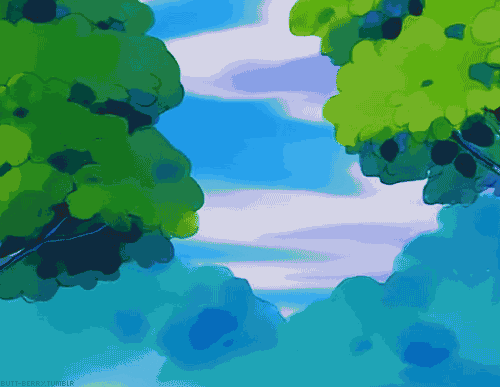
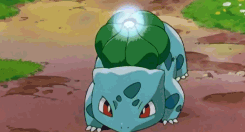
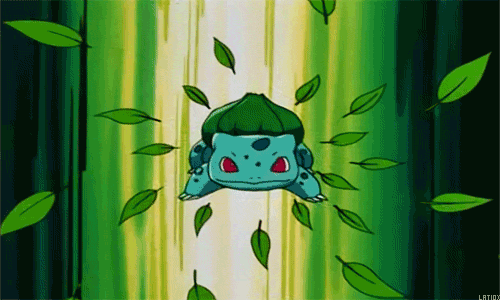
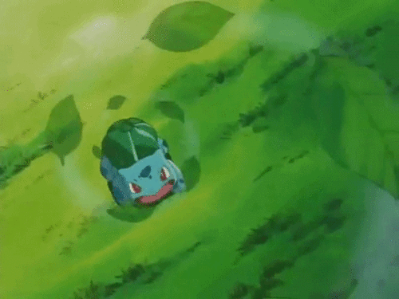

HP
ATTACK
DEFENCE
SPEED
Contents
Bulbasaur is a small, quadrupedal amphibian Pokémon that has blue-green skin with darker patches. It has red
eyes with white pupils, pointed, ear-like structures on top of its head, and a short, blunt snout with a
wide mouth. A pair of small, pointed teeth are visible in the upper jaw when its mouth is open. Each of its
thick legs ends with three sharp claws. On Bulbasaur's back is a green plant bulb that conceals two slender,
tentacle-like vines, which is grown from a seed planted there at birth. The bulb also provides it with
energy through photosynthesis as well as from the nutrient-rich seeds contained within.
Charmander can be found in hot, mountainous areas. However, it is found far more often in the ownership of
Trainers. As shown in Pokémon Snap and New Pokémon Snap, Charmander exhibits pack behavior, calling others
of its species if it finds food, and watching the flames on each other's tails to ensure they don't go out.
Bulbasaur is considered the most peaceful of the starting Pokemon. They enjoy basking in the sunlight and
relaxing. While they can be kind of lazy, they still have a lot of energy and prove to be loyal in battle.
They prefer to move in herds and typically frequent grassy areas. Despite their calm demeanor, they aren't
Pokemon to be messed with.
|  |  |
|  |  |
|
HP ATTACK DEFENCE SPEED |
 |
 |
 |
|
Starting phase, Balbasaur is a grass/earth type pokemon that is rather friendly |
evolves to Ivysaur, a grass/poison type at level 16, the bulb on its back absorbs nourishment and blooms into a large flower |
then evolves to Venusaur at level 32, the giant flower on its back collects large amounts of sunlight, which it can turn into energy |